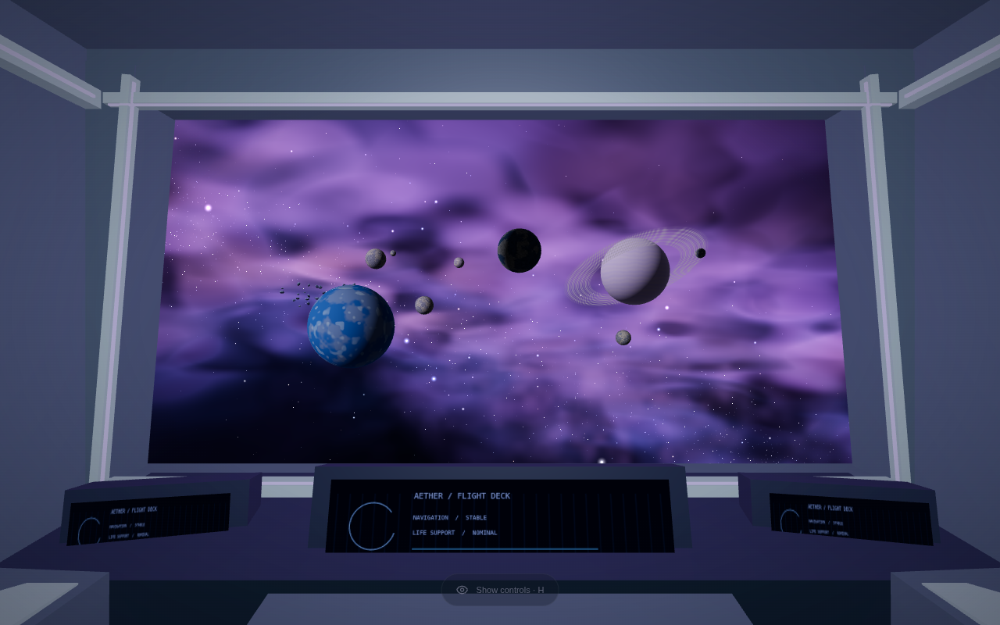
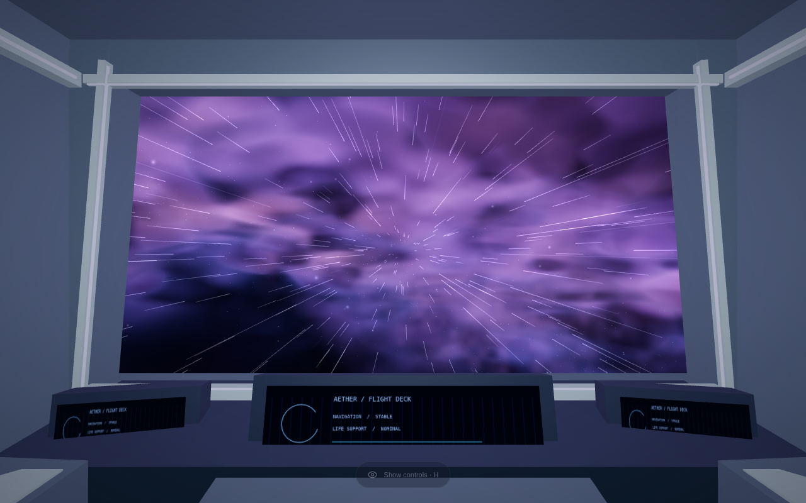
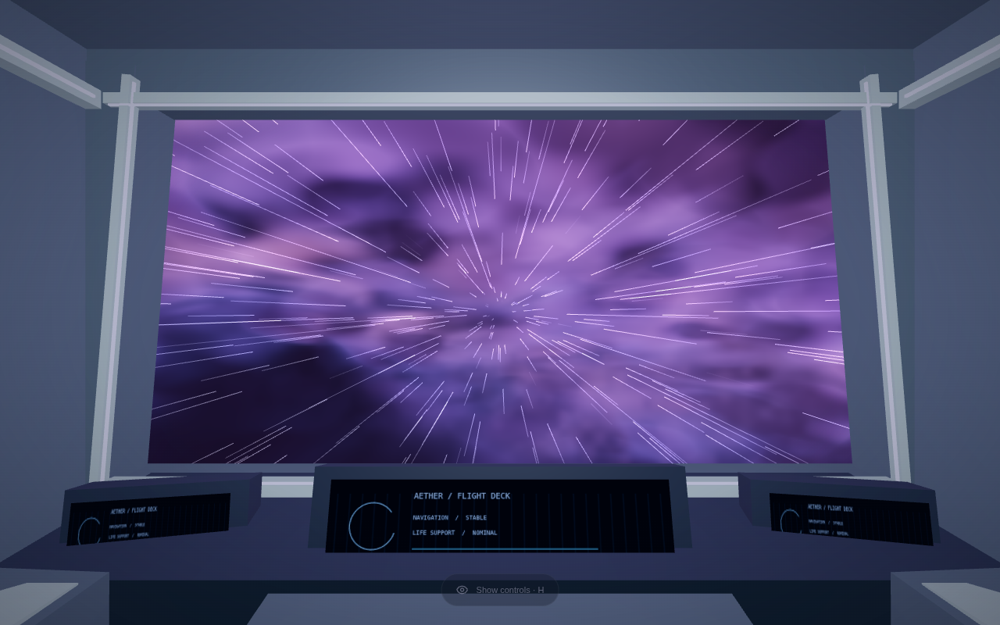
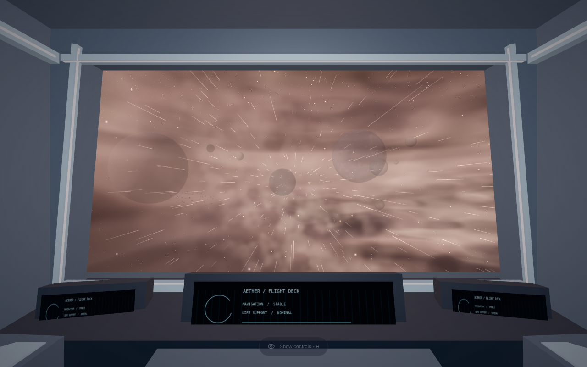
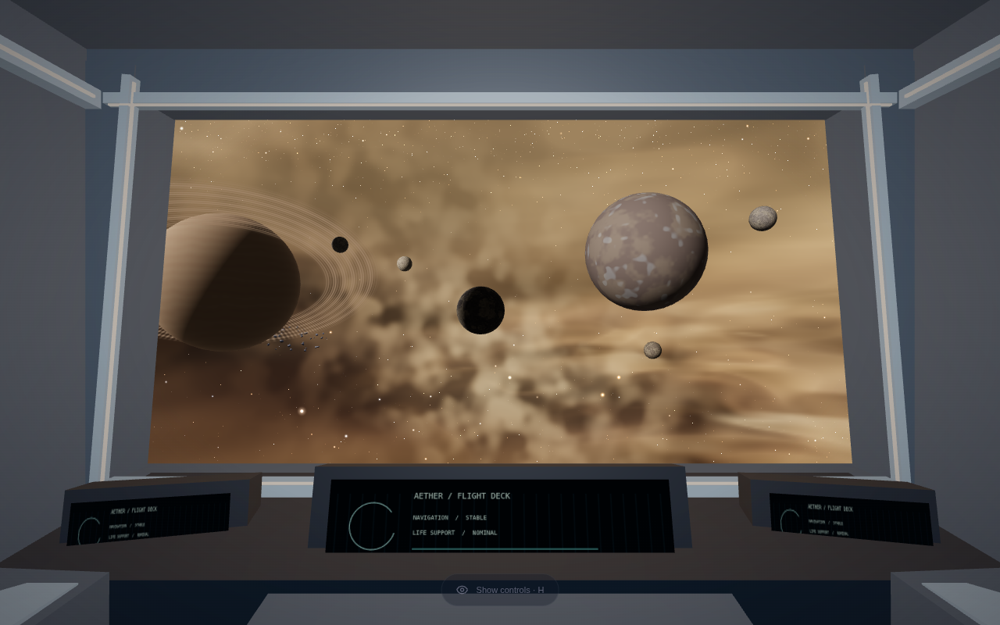
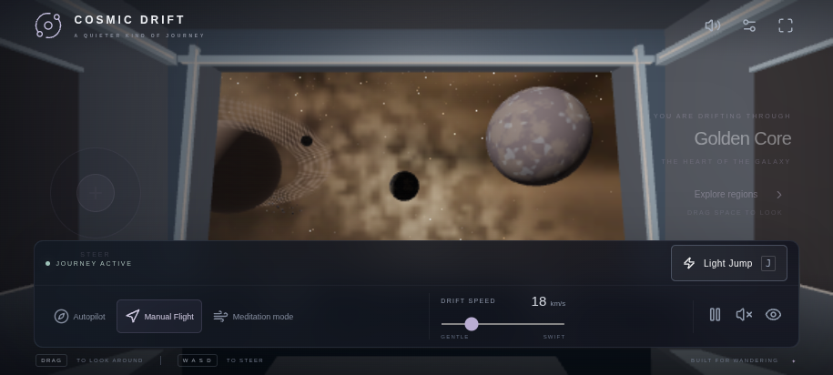

دکمهٔ Light Jump یا کلید J. چرخهٔ آمادهسازی، شتاب، عبور و رسیدن حدود ۱۰ ثانیهٔ فعال طول میکشد. تصاویر واقعی رندر Chromium هستند؛ برای ثبت دقیق فازها از Pause استفاده شده است. مقصد نمونه از Violet Nebula به Golden Core تغییر میکند و seed و چیدمان تازه دارد. آزمایش روی Android واقعی انجام نشده است.






Pause/Resume در طول سفر فعال است. Reduced Motion و Low افکت آرامتر و سبکتری دارند. پیشنمایش جدا است و سایت اصلی را جایگزین نمیکند.